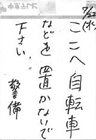

■girl/boy song (98.7.30)
keikeiさんに電話で迷惑をかけながら論文を書いたり，半分没ったり，無理矢理直したり．
大学はレーザー兵器を装備して少子世代を勝ち抜け！大学戦国時代！カッコイイなぁ！
エコール製作のギャルゲー「ドリームジェネレーション」の動向はデスクリムゾンで脳天を貫かれたクソゲーマニアなボク達にとっては気になるところだよネ！気になったので雑誌でさっそくチェックしてみたよ！
主人公は学校へも登校せず，ブラブラしているダメ学生．その主人公は宿無しの状態からゲーム開始．１年で就職し，さらにカノジョもゲットだぜ！って感じのストーリー．でも，なれる職業が，映画監督とプロゴルファーとギャンブラーの３種類．ナンデ？初期設定では１日の生活費は3000円に設定されていますが，近くのスーパーで調理器具を１万円分買うごとに，自炊するとみなされて生活費が500円ずつ下がります．
家も自分で探すのですが，段ボールの家に住む事も可能．でも，段ボールの家に住んでいると１時間ごとに体力が15ずつ低下します．それでも主人公の台詞は「やっぱり自分の家は落ち着くなぁ！」だったりしてなかなかです．家が決まったら，なけなしのお金から，ギャルに連絡するための電話を買いましょう．携帯が一番確実ですが，コンビニ電話も利用可能という徹底した無宿ぶり．そんなわけでお金が大変重要なゲームっぽいですがデスクリムゾンと違って救済措置もちゃんとあり，人体実験の被験者になることで大金を手にする事が可能です．他にも，土木作業のバイトをすると話術が低下するなどの，職業差別もテンコ盛り！
おそらくこのゲーム，体力が低下しすぎると主人公がのたれ死ぬというエンディングがあるのではないかと睨んでいます．テーマは「野犬ロデム*」と同じ！うわ！欲しい！
*野犬ロデム：板チョコシステムという会社が出しているMacのゲェム．ゲーム内容は，公園に捨てられたのら犬が何日間生きられるかというもの．
■Digeridoo (98.7.27)
なんか，就職先の交流会があるというのでトボトボと名古屋駅方面の営業所まで出向いてきました．人事部の人とかが前で説明している間にオレンヂエビスジュースが配られたりしたんですが，なんかボクだけストローがなかったり．配ってるおばちゃんに「あ，ゴメン．ないわ」とか言われて，いきなりツラく．その後，おばちゃん「ああ，落ちてた」とか言って戻って来たり．ビバ！ボクの職業ライフ！
あとは，まぁソレナリ．というか，いろいろ書けません．みんなにココがバレてるはずです．
交流しすぎ！
■Pithecanthoropus erectus (98.7.26)
サターン版『レイディアントシルバーガン』は相当オモロいです．ゲーム自体もそうなんですが，ボクは人間以外の物質が人類にメッセージを託す系に相当弱いようです．あと時間の輪系も．それなのに，なんであんなアニメでストーリー語りますか！ダイナシ！
それから，デカいものに追い詰めらるのは楽しいな！シューティングゲームの醍醐味は，弾を避けることもありますが，本質はデカいボスがブリブリ弾吐いて追い詰めてくるところじゃないでしょうか？だってその証拠にデカい敵が出てこないインベーダー系のゲームはおもしろく感じませんよ？ボクだけですか？
シルバーガンはそんなデカいボスが20体以上も！夢のようです．
■Oredesm (98.7.24)
カウントダウーン！９８！カウント開始は98秒前から．怪人98面相から予告状が届いていて，重さ98tのおもりでマンホールに閉じ込められたりしながら国道98号線を進んで行くと会場へ！時計が98回鳴ったら会場から窓98が98個消えてた！とかだったらいいのにな！もちろん，懐中電灯で影を呼び出して窓98は取りかえすんですけど．
ボクもカウントダウンに参加してきました．もちろん友人の24歳の誕生日を．カウントダウンは24秒前から．怪人24面相から(以下略)．で，奪われた物は，スーパー閉店まぎわに半額で買い込んだ肉やホタテを友人宅で焼肉にして食したことによる，ボクの胃の健康です．数日後に取りかえす予定．
■Pengiunizm (98.7.23)
なんだか寂しくなりましたよ！高校時代，理科教師に授業中に「言い訳はいいから，答えなさい」と糾弾されたのを思い出すくらいに．今になってなんで！そんな感じで登校がズルズル遅れるボクです．
結局，昼頃に大学行くわけですよ．夏休みです．小学生とかウロウロしてます．スイカバー(アイス)嘗めながら．スイカバーは強烈です．何が強烈かって，自転車で5m離れたところを通過しただけで匂いが鼻を刺します．そんなのって食べ物としてどうなんですかね？今日もいい日になりそうですね？
■Analog Bubblebath (98.7.22)
ナルキが就職活動を終了！さっそくバイト帰りに呼び出して軽く飲みです．
スゴイ！ボクそんなことしてもいいんですかね？いいんです，特別です．せめて今日くらい！
バイト先を出てマイ自転車『怪傑たくなる２世号』の所に急ぎます．そしたらコンナはり紙が！

今日に限ってナンデ！やっぱり特別ですか！
悪い予感がしつつも，名工大生行き着けの飲み屋に向かいます．途中友人とバッタリあって拾ったりしました．スゴイ！
楽しくダラダラ飲みます．店内は狭く，カウンター席しかありません(奥に座敷があるけど，大人数組が使用)が，雰囲気も飲み屋の母ちゃんが切り盛りしている感じで大変よいのです．安いし．ただ客が名工大生ばっかりですよ(安いから)．その日もサークル組が飲んでて店内は満員でした．それでもボクらは楽しく語ったり飲んだり食べたり！スゴイ！
ところが！
隣で数人で飲んでたどっかのサークルの人と，カウンターはさんで向かいで飲んでたどっかのサークルの人が言い争いを開始！向かいのサークルが「あんたらどこのサークル？」と聞いたのに対し，横のサークルの人が「あんた誰？」と聞き返したのが気に入らなかったのが原因らしいですよ．
向かいのサークルがボクらの後ろにやってきて謝る謝らないで口論をはじめましたよ！うわぁ！やっぱり特別ですか！
向かいはM2(大学院2年)で横はB4(学部4年)らしいので，向かいが「年上に向かって！」とか言葉遣いについて切り出します．「初対面だったら敬語で話すのが礼儀だろ？」と何やら言ってることがおかしいですよ？ツラそうに顔を見合わせるボクら！顔を見合わせてたら後頭部に痛みが！え？ボク殴られましたか？ナンデ！？そんなボクなんておかまいなしに続行される口論！どうしてボクだけ！そのおかまいなしぶりったら，殴った後にいちゃもんをつけるそぶりもなく，まるでそこにたまたま頭があったから叩いてみた的な扱いです．結局理由もわからないまま勘定してもらって退出しましたよ．
それにしても，年を取るだけでエラくなれるドメインってあるんですね！おのれ！水泳サークル！
ナルキに「君と飲みに来た時以外にこんな目にあったことないですよ！前世で何やりましたか？」とか聞かれたり！
犬の視点の履歴へ...
return to index...